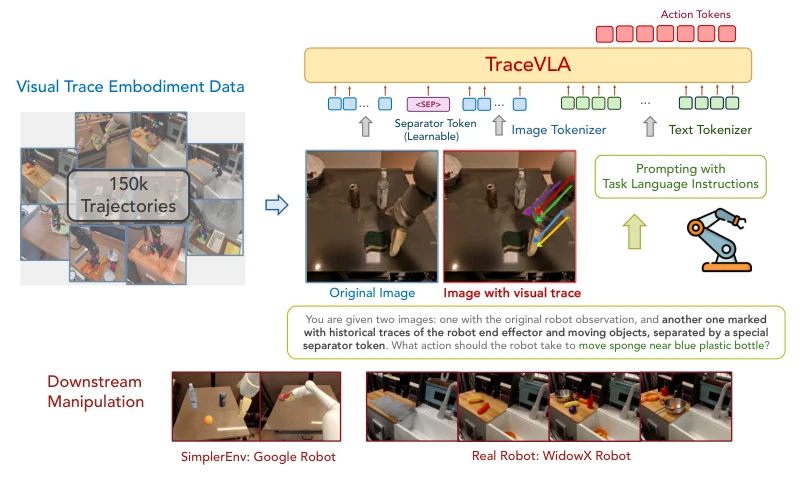
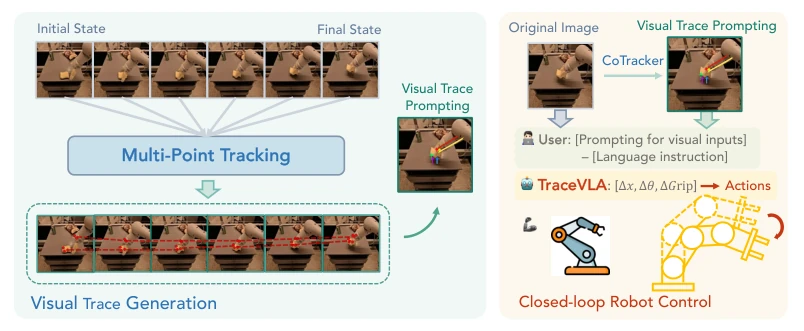
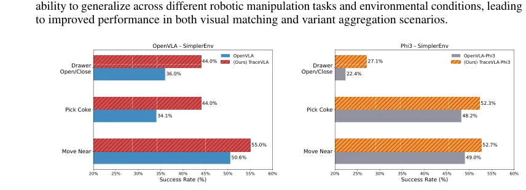
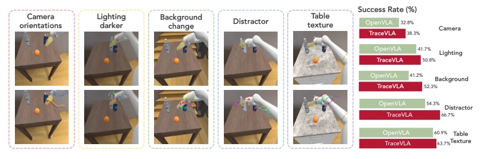
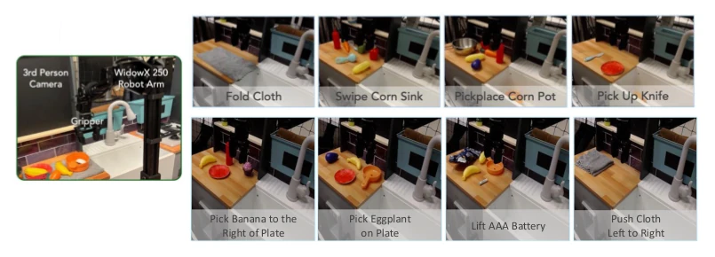
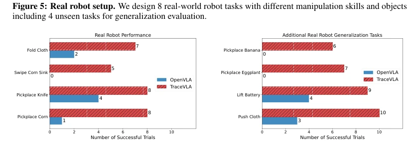
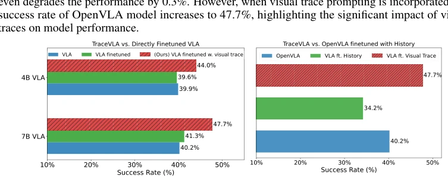
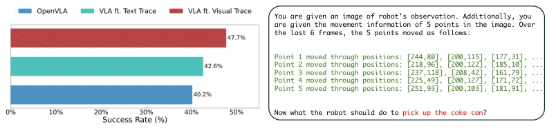
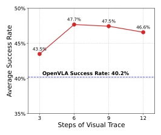
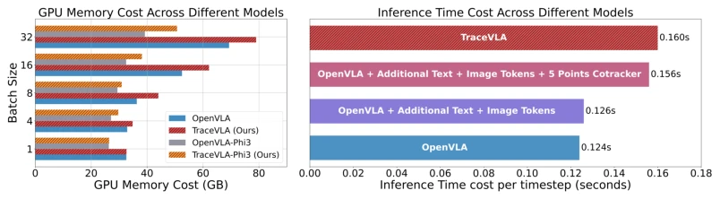

VLA models are typically like goldfish, possessing only seven seconds of memory; they lose coherence when encountering complex operations, with decisions overly relying on the current frame while ignoring history. TraceVLA's "Visual Trace Prompting" is straightforward and direct, drawing lines directly on the image, yet unexpectedly endows the model with spatial memory, akin to "installing a rearview mirror for VLA". The 7B model significantly outperforms the baseline OpenVLA on both simulation and real robots; the 4B version is the king of cost-performance, with performance close to the 7B baseline but with faster inference. However, relying on Co-Tracker may fail under poor lighting conditions; although the authors added Dropout as a fallback, the inference speed remains somewhat slow, and essentially it feeds VLA "historical playback" rather than a true world model. For extremely complex physical interactions, relying solely on drawing lines may be insufficient, but this is indeed a typical case of "small changes, big rewards", worth attempting in resource-constrained scenarios.
研究动机Motivation
现有的 Vision-Language-Action (VLA) 模型，如 OpenVLA (Kim et al., 2024) 和 RT-1 (Brohan et al., 2022)，虽然利用大规模数据实现了泛化，但在处理具身交互中的时空动态时仍显吃力。它们通常将图像输入直接映射为动作，缺乏对过去运动轨迹的感知，导致决策更偏向反应式而非基于历史状态。尝试直接拼接历史帧往往因视觉冗余而干扰模型注意力，使其难以聚焦关键控制信息。因此，如何在不显著增加计算负担的前提下，显式地编码时空轨迹以增强 VLA 的空间感知能力，成为提升复杂操作任务性能的关键瓶颈。
Existing Vision-Language-Action (VLA) models, such as OpenVLA (Kim et al., 2024) and RT-1 (Brohan et al., 2022), although achieving generalization using large-scale data, still struggle when handling spatiotemporal dynamics in embodied interaction. They typically map image inputs directly to actions, lacking perception of past motion trajectories, leading to decisions more reactive than based on historical states. Attempting to directly concatenate historical frames often interferes with model attention due to visual redundancy, making it difficult to focus on key control information. Therefore, how to explicitly encode spatiotemporal trajectories to enhance VLA's spatial perception capability without significantly increasing computational burden has become a key bottleneck in improving performance on complex manipulation tasks.
The core contribution is the Visual Trace Prompting method. The pipeline is divided into three steps: First, utilize Co-Tracker (Karaev et al., 2023) to extract dense point trajectories in historical frame sequences, using a 40x40 grid division, filtering out motion-significant "active points"; Second, overlay these trajectories onto the current observation image, generating a "visual trajectory map" containing spatiotemporal information; Finally, send the original image and trajectory map as dual inputs into the VLA model, inserting a learnable separator Token in between. Architecturally, employ OpenVLA (7B) and Phi-3-Vision (4B) as backbones, introduce a Dropout mechanism during fine-tuning, randomly replacing the trajectory map with the original image with probability α to enhance robustness. Training data contains 150K trajectories; via this approach, the model can more effectively utilize historical state information while maintaining flexibility during inference, falling back to the original image mode even if Co-Tracker fails. Additionally, a sparse query strategy is adopted during inference to reduce Co-Tracker computational overhead, ensuring real-time performance.

Figure 1: An illustration of our method. The first image shows the original robot’s observation, while the second contains the same image with overlaid visual traces. A separator token is then inserted between the visual tokens of these two images, then concatenating with text tokens and feeding into the underlying vision language model backbone to output action tokens.

Figure 2: An illustration of visual trace generation. Given a sequence of historical image observations, we first use Co-tracker to extract dense point trajectories and keep active point trajectories with significant movement. We then overlay active point trajectories on the robot’s initial observation frame as visual trace prompting. We feed both the image overlaid with visual traces and the original image into VLA as model input.
Evaluation was conducted on SimplerEnv (137 configurations) and WidowX-250 real robots (8 tasks). Baselines include OpenVLA, OpenVLA-Phi3, Octo-Base, etc. Results show TraceVLA achieved an average improvement of 10% on SimplerEnv and a 3.5-fold improvement on real robot tasks, with particularly significant generalization ability in unseen tasks. Ablation studies indicate that visual trace prompting outperforms text trace prompting (improvement of 6.4%) and directly concatenating 6 frames of historical images (the latter resulted in a 6% decrease). The 4B model's performance is close to the 7B baseline, with higher inference efficiency. Additionally, under environmental perturbations such as lighting, background changes, and camera angles, TraceVLA demonstrates stronger robustness, proving the importance of spatiotemporal information for generalization. The increase in memory usage and inference time overhead is controllable, suitable for actual deployment.

Figure 3: (Left): 7B TraceVLA vs. 7B OpenVLA. (Right): 4B TraceVLA-Phi3 vs. 4B OpenVLA-Phi3. Numbers are averaged across the visual matching and variant aggregation metrics.

Figure 4: Comparison of OpenVLA and TraceVLA performance across various environmental variations: camera orientations, lighting, background, distractors, and table texture.

Figure 5: Real robot setup. We design 8 real-world robot tasks with different manipulation skills and objects including 4 unseen tasks for generalization evaluation.

Figure 6: Performance comparison of TraceVLA and OpenVLA on8 real-world WidowX-250 robot manipula- tion tasks.

Figure 7: (Left): Comparison of average success rates between the base OpenVLA and OpenVLA-Phi3 models and their finetuned versions, with and without visual trace prompting. (Right): Comparison of average success rates between the base OpenVLA,TraceVLA, and OpenVLA finetuned with a sequence of 6 images.

Figure 8: (Left): Comparing visual trace prompting and text trace prompting. (Right) Text trace prompts example.

Figure 9: TraceVLA under differ- ent length of visual traces.

Figure 10: (Left):Comparison of GPU memory cost of 7B TraceVLA, OpenVLA and 4B TraceVLA-Phi3, OpenVLA-Phi3. (Right): Comparison of inference time across different models.